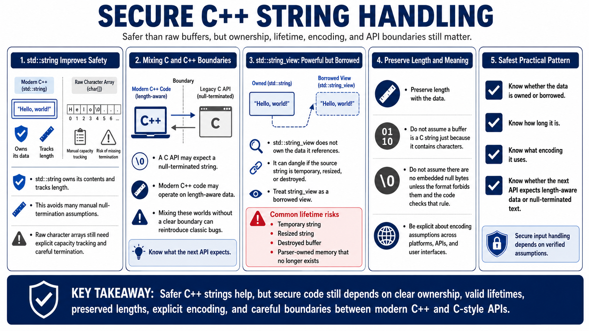

Strings, Buffers, and Lifetime Safety
Connecting to LMS... Progress: in progress

Narration
C++ string handling is safer than raw character arrays in many situations, but the details still matter. std::string owns its contents and tracks length, which avoids many null-termination assumptions. A character array may still require explicit capacity tracking and careful termination. A C API may expect a null-terminated string, while modern C++ code may operate on length-aware data. Mixing those worlds without a clear boundary can reintroduce classic bugs.
std::string_view is powerful because it can refer to existing text without copying. It is also easy to misuse because it does not own the data it references. If a string_view points into a temporary string, a resized string, a destroyed buffer, or memory owned by a parser that has moved on, later use may become a lifetime bug. Treat string_view as a borrowed view. It should not outlive the data behind it, and it should not be stored casually unless ownership and lifetime are obvious.
Secure input handling preserves length with data. Do not assume a buffer is a C string just because it contains characters. Do not assume text has no embedded null bytes unless the format forbids them and the code checks that rule. Be explicit about encoding assumptions, especially when input crosses platforms, APIs, or user interfaces. The safest pattern is to know whether data is owned or borrowed, how long it is, what encoding it uses, and whether the next API expects length-aware data or null-terminated text.